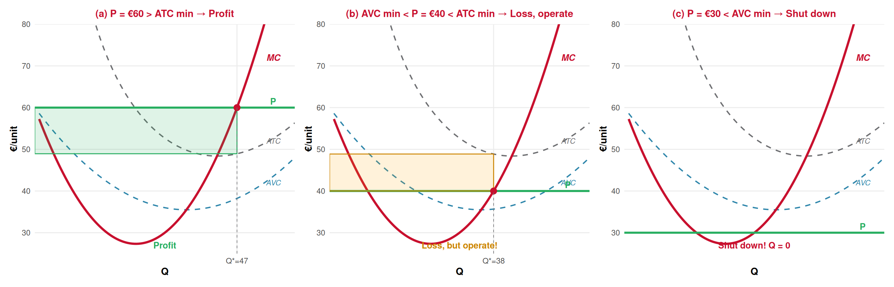
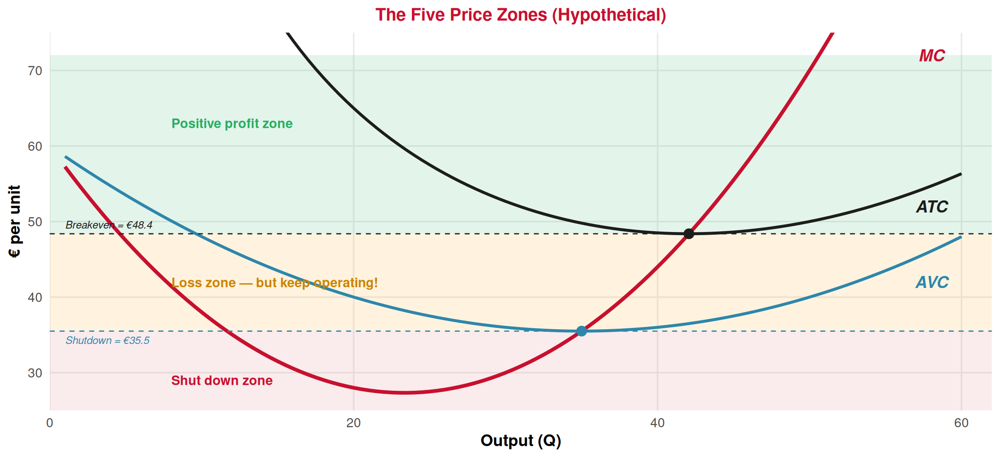
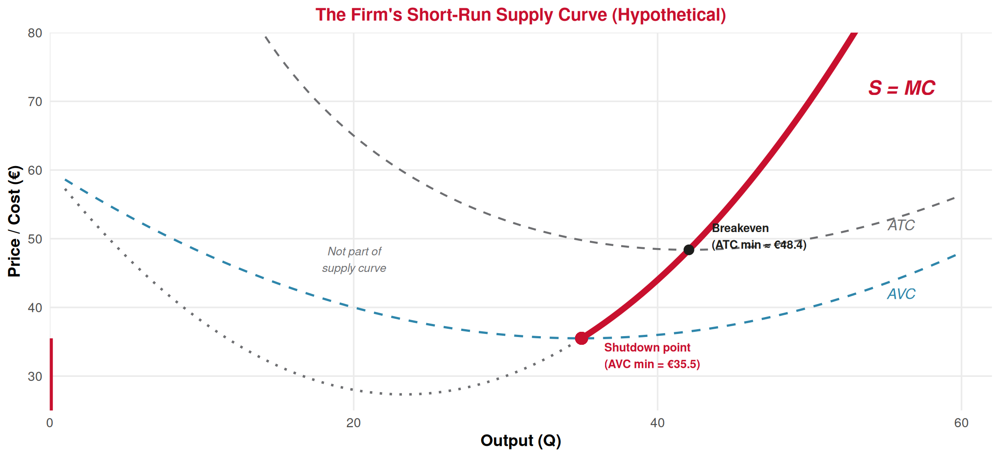

Producer Theory
Lecture 12: Profits, Shutdown & Breakeven. The Supply Curve.
Paulo Fagandini
2026
Recap: Lecture 11 ⏪
What we covered last time:
- Perfect competition: many firms, identical product, price taker
- Profit: \(\pi = TR - TC = (P - ATC) \times Q\)
- The golden rule: produce where \(P = MC\) (on the rising portion)
- If \(P > ATC\) → profit; if \(P = ATC\) → breakeven; if \(P < ATC\) → loss
. . .
🎯 Today: We left a big question unanswered — if a firm is making a loss, should it keep producing or shut down?
And once we answer that, we’ll see how MC becomes the supply curve!
The Shutdown Decision
A Loss-Making Firm’s Dilemma 🤔
Situation: A hotel in the Algarve during winter. The market price is low, and the hotel is losing money (\(P < ATC\)).
Two options:
🏭 Keep operating
- Earns revenue: \(TR = P \times Q\)
- Pays all costs: \(FC + VC\)
- Loss = \(TC - TR\)
🚫 Shut down (produce Q = 0)
- Earns no revenue: \(TR = 0\)
- Still pays fixed costs: \(FC\) (lease, insurance, mortgage)
- Loss = \(FC\)
. . .
The Key Question
When \(P < ATC\), which loss is smaller? The loss from operating, or the loss from shutting down (= FC)?
The Logic: Compare the Two Losses ⚖️
Loss if operating at \(Q^*\) (where \(P = MC\)):
\[\text{Loss}_{\text{operate}} = TC - TR = (FC + VC) - TR\]
Loss if shut down (\(Q = 0\)):
\[\text{Loss}_{\text{shutdown}} = FC\]
Operate if the operating loss is smaller than the shutdown loss:
\[(FC + VC) - TR < FC\]
\[VC - TR < 0\]
\[TR > VC\]
Dividing both sides by \(Q\):
\[\boxed{P > AVC} \quad \Rightarrow \quad \text{Keep operating!}\]
💡 If revenue covers at least the variable costs, operating is less bad than shutting down. The revenue above VC contributes something toward fixed costs.
The Shutdown Rule 🛑
Shutdown Rule (Short Run)
- If \(P > AVC\) → Operate (even at a loss). Revenue covers VC and helps pay part of FC.
- If \(P = AVC\) → Indifferent. Loss is the same whether you operate or shut down (both = FC).
- If \(P < AVC\) → Shut down. Operating makes the loss worse than just paying FC.
Tourism example 🏨:
A hotel’s FC = €10,000/month (lease). During winter, it charges €40/night with AVC = €35/night.
Since \(P = €40 > AVC = €35\): stay open!
Each guest contributes €5 toward fixed costs. Better than losing the full €10,000.
But if price drops to €30/night and AVC is still €35:
\(P = €30 < AVC = €35\): shut down!
Every guest costs more to serve than the hotel earns. Operating makes losses worse.
A Numerical Example: Boat Tours in Lagos ⛵
Recall the boat tour operator from last lecture’s exercise: FC = €200/day, P = €35/ticket.
| Q | FC | VC | TC | AVC = VC/Q | TR (P=35) | Profit | TR − VC |
|---|---|---|---|---|---|---|---|
| 0 | 200 | 0 | 200 | — | 0 | −200 | 0 |
| 1 | 200 | 20 | 220 | 20.00 | 35 | −185 | 15 |
| 2 | 200 | 35 | 235 | 17.50 | 70 | −165 | 35 |
| 3 | 200 | 55 | 255 | 18.33 | 105 | −150 | 50 |
| 4 | 200 | 80 | 280 | 20.00 | 140 | −140 | 60 |
| 5 | 200 | 115 | 315 | 23.00 | 175 | −140 | 60 |
| 6 | 200 | 165 | 365 | 27.50 | 210 | −155 | 45 |
Hypothetical illustrative example
👉 At Q* = 5: The firm loses €140/day. But if it shuts down, it loses €200/day (= FC).
Since \(P = €35 > AVC = €23\), operating saves €60 compared to shutting down!
That €60 = \(TR - VC = 175 - 115\) is the contribution toward fixed costs.
Two Critical Price Levels
The Breakeven Price ↔︎️
Breakeven Price = Minimum ATC
The price at which the firm earns zero economic profit. Revenue exactly covers all costs (fixed and variable).
\[P_{\text{breakeven}} = ATC_{\min}\]
- At \(P > ATC_{\min}\): the firm earns positive profit 📈
- At \(P = ATC_{\min}\): zero economic profit — but the firm is still happy! It covers all costs including opportunity costs
- At \(P < ATC_{\min}\): the firm operates at a loss (but may still choose to operate — see shutdown rule)
. . .
💡 Remember: “zero economic profit” ≠ “zero accounting profit.” The firm’s owners earn a normal return — exactly what they could earn elsewhere. There’s no incentive to leave.
The Shutdown Price 🛑
Shutdown Price = Minimum AVC
The price below which the firm should produce nothing in the short run.
\[P_{\text{shutdown}} = AVC_{\min}\]
- At \(P > AVC_{\min}\): operate — revenue covers variable costs and contributes to FC
- At \(P = AVC_{\min}\): indifferent — loss equals FC whether you operate or not
- At \(P < AVC_{\min}\): shut down — every unit produced makes losses worse
. . .
The zone between shutdown and breakeven (\(AVC_{\min} < P < ATC_{\min}\)) is where the firm operates at a loss but is better off producing than closing. This is a very real situation in tourism!
The Five Price Zones: The Complete Picture 📊

Why Does the Shutdown Rule Use AVC, Not ATC? 💡
This is the most common confusion students have. Let’s be very clear:
ATC includes fixed costs.
If P < ATC, the firm loses money — but it might still be better off operating.
Why? Because FC must be paid regardless.
ATC answers: “Am I profitable?”
AVC excludes fixed costs.
If P < AVC, every unit sold costs more to produce than it earns in revenue.
Operating doesn’t just fail to cover FC — it adds to losses.
AVC answers: “Does producing make things worse?”
. . .
The Rule of Thumb
- Compare \(P\) to ATC to know if you’re making a profit or loss
- Compare \(P\) to AVC to know if you should operate or shut down
The Hotel Off-Season: A Real-World Application 🏨
Why do Algarve hotels stay open in winter at very low occupancy?
The math:
- FC (lease, mortgage, insurance): €30,000/month
- AVC per guest-night: €25
- Winter price: €35/night
- Occupancy: 30%
Since \(P = €35 > AVC = €25\): stay open!
Each guest contributes €10 toward FC.
Even at 30% occupancy, they recover some FC rather than none.
But what if they close for winter?
- Loss = FC = €30,000/month
- No revenue, no variable costs
Operating at a loss (say −€20,000/month) is better than shutting down (−€30,000/month).
👉 This explains why you see hotels with near-empty lobbies in January — they’re still better off open than closed!
. . .
⚠️ But if winter prices drop to €20/night (\(P < AVC = €25\)): now it’s cheaper to close temporarily.
From MC to the Supply Curve
The Birth of the Supply Curve 🌟
We now have everything we need to derive the firm’s short-run supply curve:
The Individual Firm’s Supply Curve
The supply curve of a perfectly competitive firm is the portion of its MC curve that lies above AVC.
- For \(P \geq AVC_{\min}\): the firm produces \(Q^*\) where \(P = MC\)
- For \(P < AVC_{\min}\): the firm shuts down → \(Q = 0\)
Intuition: As the market price rises, the firm moves up along its MC curve, producing more. This is exactly what a supply curve shows — higher price → higher quantity supplied!
👉 The supply curve starts at the shutdown point (minimum AVC) and follows MC upward.
The Supply Curve Graphically 📈

Reading the Supply Curve: Three Price Scenarios 🔍
(a) \(P > ATC\): Produce, earn profit (green area). (b) \(AVC < P < ATC\): Produce at a loss (orange area), but operating is better than shutdown. (c) \(P < AVC\): Shut down, produce nothing.
The Firm’s Decision Flowchart 📋
Complete Decision Rules for a Firm in Perfect Competition
Step 1: Find \(Q^*\) where \(P = MC\) (rising portion)
Step 2: Compare \(P\) to \(AVC\) at \(Q^*\):
- If \(P < AVC\) → shut down (\(Q = 0\))
- If \(P \geq AVC\) → operate at \(Q^*\)
Step 3: Compare \(P\) to \(ATC\) at \(Q^*\):
- If \(P > ATC\) → positive economic profit 📈
- If \(P = ATC\) → zero economic profit (breakeven) ↔︎️
- If \(AVC \leq P < ATC\) → operating at a loss, but it’s the best option ⚠️
💡 Steps 2 and 3 answer different questions: Step 2 = “should I produce?”, Step 3 = “am I profitable?”
Tourism Application
Seasonal Tourism and the Shutdown Rule ☀️ ☁️
The shutdown rule explains a major pattern in tourism businesses:
☀️ Peak season (June–September)
- High demand → high market price
- \(P > ATC\) → positive profits
- Hotels fully staffed, all facilities open
- New temporary businesses open (beach bars, tour operators)
This is the profit zone!
☁️ Off-season (November–February)
- Low demand → low market price
- Three possibilities:
- \(P > ATC\): still profitable (rare in deep off-season)
- \(AVC < P < ATC\): loss but keep operating (common!)
- \(P < AVC\): shut down temporarily (some businesses do this!)
. . .
👉 This is why some Algarve restaurants close entirely from November to March (P < AVC), while hotels stay open at reduced capacity (AVC < P < ATC). Different cost structures, different shutdown prices!
Airlines: Load Factor and the Shutdown Logic ✈️
Airlines face a similar decision for individual routes:
Should we keep flying the Lisbon–Faro route in January?
- 🔒 Fixed costs per flight: aircraft lease, crew salaries, airport fees → very high
- 🔄 Variable costs per passenger: meals, baggage, marginal fuel → quite low
Because AVC per passenger is very low, the shutdown price is low. Airlines will operate flights even at very low load factors because almost any ticket price > AVC.
. . .
This explains:
- 📉 Extremely cheap last-minute fares — as long as \(P > AVC\) (a few euros!), it’s worth filling the seat
- 🚫 Route cancellations only when demand is so low that even rock-bottom fares can’t cover variable costs
- 🔄 Seasonal route adjustments — winter routes to ski destinations replace summer beach routes
Summary 📝
Today’s Key Takeaways:
- Shutdown rule: In the short run, operate if \(P \geq AVC\); shut down if \(P < AVC\)
- Breakeven price = \(ATC_{\min}\) — the price needed for zero economic profit
- Shutdown price = \(AVC_{\min}\) — the price below which the firm should produce nothing
- Between shutdown and breakeven (\(AVC_{\min} \leq P < ATC_{\min}\)): the firm operates at a loss, but this loss is smaller than the loss from shutting down (which = FC)
- The firm’s supply curve = MC above AVC (the rising portion of MC, starting at the shutdown point)
- For \(P < AVC_{\min}\): \(Q = 0\) (vertical segment along the y-axis)
- Tourism application: explains seasonal openings/closings, low-season pricing, and last-minute deals
Connection: Today we derived the individual firm’s supply curve. Next lecture: the seller’s supply rule (\(P = MC\)) in more depth, and we start looking at market supply and producer surplus.
Next (Lecture 13, March 27): The Seller’s Supply Rule: P = MC. 📈
Exercises
Practice Time! ✏️
Shutdown decisions, breakeven, and the supply curve.
Exercise 1: Multiple Choice
Question: A small pastelaria (pastry shop) near Belém Tower has fixed costs of €3,000/month and is currently losing €1,000/month. The owner considers closing for the winter. Should she?
A. Yes — she is making a loss, so she should close immediately
B. No — as long as her revenue exceeds her variable costs, she should stay open
C. Yes — she should close and reopen when she can make a profit
D. It depends on whether she likes making pastéis de nata
Answer: B
Her loss is €1,000/month. If she shuts down, her loss would be €3,000/month (= FC). Since −€1,000 > −€3,000, operating is less bad. This means her revenue must exceed her variable costs. The correct criterion is \(P > AVC\), not \(P > ATC\).
Option A confuses breakeven (ATC) with shutdown (AVC). Option C gives up revenue that partially covers FC.
Exercise 2: Multiple Choice
Question: A competitive firm has AVC min = €20 and ATC min = €35. If the market price is €25, the firm should:
A. Shut down because P < ATC
B. Produce where P = MC and earn positive profit
C. Produce where P = MC but operate at a loss
D. Produce where P = AVC
Answer: C
\(P = €25 > AVC_{\min} = €20\) → the firm should operate (not shut down, so A is wrong).
\(P = €25 < ATC_{\min} = €35\) → the firm is making a loss (so B is wrong).
The firm produces at \(Q^*\) where \(P = MC = €25\), operating at a loss but minimizing that loss. The loss from operating is smaller than the loss from shutting down.
Exercise 3: Open Question ✍️
A kayak rental business on the Douro River in Porto has the following monthly cost structure:
| Kayaks rented/month (Q) | FC (€) | VC (€) | TC (€) |
|---|---|---|---|
| 0 | 1,500 | 0 | 1,500 |
| 50 | 1,500 | 1,000 | 2,500 |
| 100 | 1,500 | 1,800 | 3,300 |
| 150 | 1,500 | 2,400 | 3,900 |
| 200 | 1,500 | 3,200 | 4,700 |
| 250 | 1,500 | 4,500 | 6,000 |
| 300 | 1,500 | 6,600 | 8,100 |
Hypothetical illustrative example
a) Calculate AVC, ATC, and MC for each output level.
b) What is the shutdown price? What is the breakeven price?
c) If the market price is €22/kayak, should the firm operate? What is the profit-maximizing output? Calculate the profit (or loss).
d) If the market price drops to €14/kayak, should the firm operate? Explain and calculate the loss under each scenario (operate vs. shut down).
e) In the long run, if firms in this market are making losses, what would you expect to happen? How does this relate to the long-run breakeven condition?
Exercise 3: Solution — Part a
| Q | FC | VC | TC | AVC = VC/Q | ATC = TC/Q | MC = ΔTC/ΔQ |
|---|---|---|---|---|---|---|
| 0 | 1,500 | 0 | 1,500 | — | — | — |
| 50 | 1,500 | 1,000 | 2,500 | 20.00 | 50.00 | 20.00 |
| 100 | 1,500 | 1,800 | 3,300 | 18.00 | 33.00 | 16.00 |
| 150 | 1,500 | 2,400 | 3,900 | 16.00 | 26.00 | 12.00 |
| 200 | 1,500 | 3,200 | 4,700 | 16.00 | 23.50 | 16.00 |
| 250 | 1,500 | 4,500 | 6,000 | 18.00 | 24.00 | 26.00 |
| 300 | 1,500 | 6,600 | 8,100 | 22.00 | 27.00 | 42.00 |
MC calculation example: From Q = 100 to Q = 150: \(MC = \frac{3{,}900 - 3{,}300}{150 - 100} = \frac{600}{50} = €12\) per kayak.
Key observations: AVC is minimized at Q = 150–200 (AVC = €16). ATC is minimized at Q = 200 (ATC = €23.50). MC follows the U-shape: falls to €12, then rises.
Exercise 3: Solution — Parts b & c
b) Shutdown and breakeven prices:
- Shutdown price = \(AVC_{\min} = €16\) (at Q = 150–200)
- Breakeven price = \(ATC_{\min} = €23.50\) (at Q = 200)
c) At \(P = €22\):
Since \(P = €22 > AVC_{\min} = €16\): Yes, operate!
Find Q* where P = MC: MC = €16 at Q = 200, MC = €26 at Q = 250. Since P = €22 falls between, the firm produces between 200 and 250 kayaks. Since we only have discrete data, the firm produces Q* = 200 (the last quantity where MC ≤ P).
Profit at Q = 200: \(\pi = TR - TC = (22 \times 200) - 4{,}700 = 4{,}400 - 4{,}700 = -€300\)
The firm is operating at a loss of €300/month. But this is better than shutting down, which would cost −€1,500 (= FC).
Exercise 3: Solution — Parts d & e
d) At \(P = €14\):
Since \(P = €14 < AVC_{\min} = €16\): Shut down!
- If operating: Find Q where MC ≈ P = €14 (between Q = 100 and Q = 150). At Q = 150: \(TR = 14 \times 150 = €2{,}100\), \(TC = €3{,}900\), Loss = −€1,800.
- If shut down: Loss = FC = −€1,500.
Since \(|-€1{,}500| < |-€1{,}800|\), shutting down is better. ✅
👉 At P = €14, operating makes things worse by €300 compared to just paying FC.
e) In the long run, if firms are making losses:
Some firms will exit the market (they can now escape fixed costs too). As firms exit, market supply shifts left, which raises the equilibrium price. Firms keep exiting until \(P = ATC_{\min}\) for the remaining firms — the long-run breakeven condition. In the long run, perfectly competitive firms earn zero economic profit.
Next Lecture
April 8th, 2026: The Seller’s Supply Rule — P = MC in depth 📈
We’ll formalize the \(P = MC\) supply rule, derive the concept of producer surplus, and build the market supply curve from individual firms.
Thank You!
Questions? 🙋
📧 paulo.fagandini@ext.universidadeeuropeia.pt
Next class: Friday, April 8th, 2026

Economics of Tourism | Lecture 12